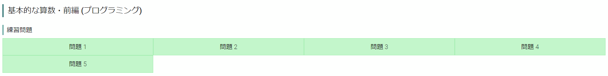
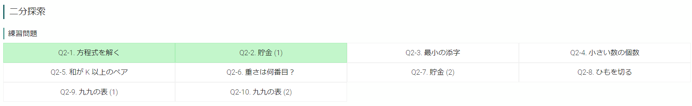

アルゴ式のテスターに選ばれました9
10月19日

この日はメンタル的にアルゴ式やる感じではなかったので申し訳程度にこれらをさわって終わりました。現在の連続チャレンジ期間が途切れるとなんか嫌じゃないですか……特に意味はないですけど、一応「諦めずに続けること」も一つの目標なのでアルゴ式と一応向き合ったよ～という証拠ということで。
10月20日

最近整数問題のアルゴリズムのコンテンツが増えたアルゴ式ですが、ずっとここやってても飽きるので気分転換に二分探索を進めることにしました。聞いたことはあるもののいまいち理解してなかったのですが、今回のQ1とQ2で少し理解できるようになってきたような気がします（気がするだけ）。実際に何をやっているのか紙に書きながら考えてみるだけで全然違いますね。
こたつ
急に寒くなってきたので最近こたつを使い始めました。
こたつサイコーーーーーーーーーーーーーーーーーーー
実は自分、こたつを幼稚園くらいのときにおばあちゃんの家で一回使ったことがあるかないかなのでこたつをそんなに知らなかったんですよね。そして案の定こたつから出られない生活になってしまいました。家に帰ったらとりあえずこたつに潜ってます。こたつの中で寝ないようには気を付けてますがこのままだといつかやりそう。
そいえば、こたつは漢字で「炬燵」などと書くらしいです。漢字難しい……
漢字嫌い